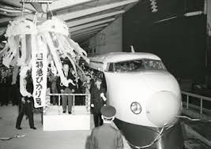
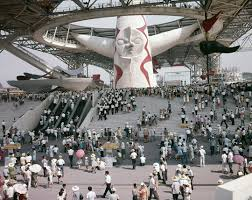
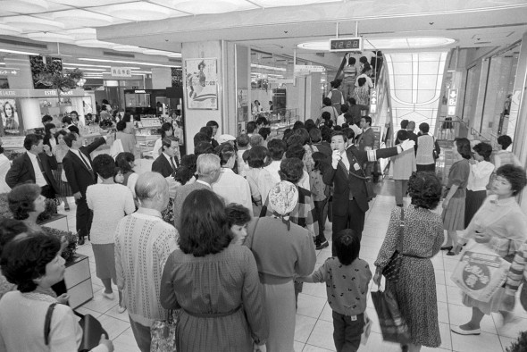
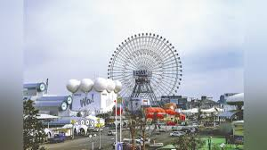

インタビュー内容
私がインタビューする内容は、以下の5つの出来事についてです。
- 1964年 新幹線開業
- 1970年 大阪万博開催
- 1985年 横浜そごう開店
- 1989年 横浜博覧会
- 1993年 ランドマークタワー、八景島シーパラダイスなどのオープン
1
東海道新幹線が開通し、当時の空気はどのようになっていたのか。

2
1970の大阪万博はどれだけ盛り上がっていたのか。個人的には思っていたのか。

3
開店当時、駅周辺はどのような雰囲気だったのか。

4
この年は横浜市制100周年、横浜開港130年の記念の年であり、横浜博覧会が行われた。
街の雰囲気やイベントの印象はどうだったのか。

5
シーパラダイス、ランドマークタワーなどがオープンし、周りの人たちの反応はどうだったのか。

班のメンバー
haru.s
奥さん